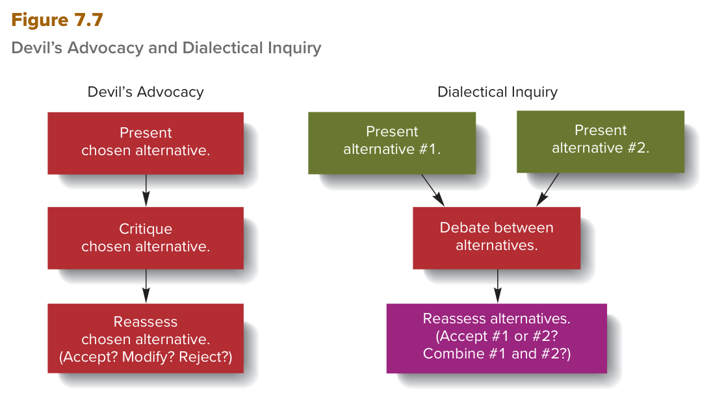

MGT 102 · Chapter 7 · Section 3 of 4:
Group Decision Making
Objective LO7-3: Identify the advantages and disadvantages of group decision making, and describe techniques that can improve it.
In the previous lesson you learned that a manager alone can fall into
four cognitive biases, and the book's last piece of
advice was: many managers find it hard to see their own biases, so it is better
for them to work with other managers who can expose their weak points.
This is where this section starts (LO7-3): most important decisions are made by groups, not by
individuals. The book lists advantages and disadvantages of
group decision making (it does not number them; we group them as 4 advantages and 3 disadvantages to help you remember), one major source of bias in groups called
groupthink, and then 3 ways to improve group decisions: devil's advocacy and dialectical
inquiry (both are in Figure 7.7) and diversity among the decision
makers.
Focus from now on four things that trip up students here: (1) groupthink = trying hard to reach agreement instead of assessing the information carefully — not conflict or fights between members, (2) devil's advocacy = one alternative and one member who criticizes it, while dialectical inquiry = two alternatives and two groups who debate, (3) the easier one to implement = devil's advocacy, (4) the four groupthink examples with their years. And take the English definitions word for word from the EXAM BOX.
When managers work as a team to make decisions and solve problems:
| # | The advantage | The book's words |
|---|---|---|
| 1 | Their choices of alternatives are less likely to fall victim to the biases and errors we discussed before (the four biases in lesson 2) | less likely to fall victim to the biases and errors |
| 2 | They draw on the combined skills, competencies, and accumulated knowledge of the group members, so they get better at generating feasible alternatives and at making good decisions | combined skills, competencies, and accumulated knowledge |
| 3 | They process more information and correct one another's errors | process more information · correct one another's errors |
| 4 | In the implementation phase, all the managers affected by the decision agree to cooperate. When a group of managers decides (instead of one top manager deciding and imposing it on the subordinate managers), the probability that the decision is implemented successfully increases | implementation phase · agree to cooperate |
The book also says that encouraging employee participation in decision making comes in detail in Chapter 14.
| # | The disadvantage | The book's words |
|---|---|---|
| 1 | Time: groups often take much longer than individuals to make decisions | take much longer than individuals |
| 2 | Hard to agree: getting two or more managers to agree on the same solution is difficult, because their interests and preferences are often different | managers' interests and preferences are often different |
| 3 | Biases: exactly like an individual manager's decision, a group decision can be undermined by biases, and a major source of group bias = groupthink (the next concept) | can be undermined by biases · a major source of group bias |
The class booklet sums them up in other words: a group gives more information and perspectives and additional alternatives, and it improves the acceptance of a decision (= the cooperation-in-implementation advantage); its weak side is that it takes longer and can be influenced by pressure to conform or by dominant members — and that is exactly how groupthink works (gathering around one central manager). Same ideas, but the exam takes the book's words.
In Management in Action, under LO7-3, the book adds a note about groups: sometimes they make
extreme decisions — decisions that are more
risky or more
conservative than
what each person would have decided alone. One explanation for this is called
diffusion of responsibility: in a group, the responsibility for the
outcomes of a decision is spread
among the members, so each person feels less than fully
accountable,
and the decision is extreme because no one took full responsibility for it.
The book asks you to discuss: what are the ethical implications of extreme decisions by groups? And should each member feel fully accountable for the result of a group decision? There is no official answer — but notice that this is not groupthink: groupthink = trying to reach agreement, and diffusion of responsibility = responsibility that is spread out.
Many (or perhaps most) important organizational decisions are made by groups or teams of managers rather than by individuals. Group decision making is superior to individual decision making in several respects. When managers work as a team to make decisions and solve problems, their choices of alternatives are less likely to fall victim to the biases and errors discussed previously. They can draw on the combined skills, competencies, and accumulated knowledge of group members and thereby improve their ability to generate feasible alternatives and make good decisions. Group decision making also allows managers to process more information and to correct one another’s errors. And in the implementation phase, all managers affected by the decisions agree to cooperate. When a group of managers makes a decision (as opposed to one top manager making a decision and imposing it on subordinate managers), the probability that the decision will be implemented successfully increases.
Some potential disadvantages are associated with group decision making. Groups often take much longer than individuals to make decisions. Getting two or more managers to agree to the same solution can be difficult because managers’ interests and preferences are often different. In addition, just like decision making by individual managers, group decision making can be undermined by biases. A major source of group bias is groupthink.
| Term | The book's definition (memorize it word for word) | What it means |
|---|---|---|
| Groupthink التفكير الجماعي |
A pattern of faulty and biased decision making that occurs in groups whose members strive for agreement among themselves at the expense of accurately assessing information relevant to a decision. | a pattern of faulty and biased decision making in groups whose members try hard to agree, even if they lose an accurate assessment of the information about the decision. |
What happens when a group falls into it? (in the book's order)
And the book's summary at the end of the chapter says it in one sentence: the decision makers who suffer from it collectively embark on a dubious course of action — a doubtful course — without questioning the assumptions under their decision.
The book says all of these decisions were likely influenced by groupthink:
| # | Who decided | What the decision was | Year |
|---|---|---|---|
| 1 | President Kennedy and his advisers | the failed Bay of Pigs invasion in Cuba | 1962 |
| 2 | President Johnson and his advisers | escalating the war in Vietnam | 1964–1967 |
| 3 | President Nixon and his advisers | covering up the Watergate break-in | 1972 |
| 4 | NASA and Morton Thiokol | launching the ill-fated Challenger shuttle | 1986 |
The Challenger example in detail: when the managers at NASA and Morton Thiokol fell into groupthink, they convinced each other that all was well and there was no need to delay the launch.
Careful: Challenger comes up in three places in the chapter: (1) lesson 1 = an example of a disastrous decision (it killed six astronauts in 1986), (2) lesson 2 = an example of poor assessment of alternatives — economic feasibility won over ethicalness (the astronauts' safety), and people who wanted to speak up were discouraged (speaking up was discouraged), (3) here = an example of groupthink.
Groupthink is a pattern of faulty and biased decision making that occurs in groups whose members strive for agreement among themselves at the expense of accurately assessing information relevant to a decision. When managers are subject to groupthink, they collectively embark on a course of action without developing appropriate criteria to evaluate alternatives. Typically, a group rallies around one central manager, such as the CEO, and the course of action that manager supports. Group members become blindly committed to that course of action without evaluating its merits. Commitment is often based on an emotional, rather than an objective, assessment of the optimal course of action.
The decision President Kennedy and his advisers made to launch the unfortunate Bay of Pigs invasion in Cuba in 1962, the decisions made by President Johnson and his advisers from 1964 to 1967 to escalate the war in Vietnam, the decision made by President Nixon and his advisers in 1972 to cover up the Watergate break-in, and the decision made by NASA and Morton Thiokol in 1986 to launch the ill-fated Challenger shuttle—all were likely influenced by groupthink. After the fact, decision makers such as these who may fall victim to groupthink are often surprised that their decision-making process and outcomes were so flawed.
When groupthink occurs, pressures for agreement and harmony within a group have the unintended effect of discouraging individuals from raising issues that run counter to majority opinion. For example, when managers at NASA and Morton Thiokol fell victim to groupthink, they convinced each other that all was well and that there was no need to delay the launch of the Challenger space shuttle.
One major source of poor decision making is groupthink. Afflicted decision makers collectively embark on a dubious course of action without questioning the assumptions that underlie their decision.
The existence of cognitive biases and groupthink raises a question: how can we improve the quality of group and individual decisions so that they are realistic and based on a thorough evaluation of alternatives? The answer: two techniques known to counteract groupthink and cognitive biases: devil's advocacy and dialectical inquiry (Figure 7.7 — you will see it in the next concept).
| Term | The book's definition (memorize it word for word) | What it means |
|---|---|---|
| Devil’s advocacy محامي الشيطان / المعارضة النقدية |
Critical analysis of a preferred alternative, made in response to challenges raised by a group member who, playing the role of devil’s advocate, defends unpopular or opposing alternatives for the sake of argument. | a critical analysis of one preferred alternative, made as a response to challenges raised by a group member who plays the “devil's advocate” and defends unpopular or opposing alternatives for the sake of argument only. |
In the main text the book defines it in a shorter sentence (the one in the class booklet): a critical analysis of a preferred alternative to ascertain its strengths and weaknesses before it is implemented — a critical analysis of the preferred alternative to find out its strengths and weaknesses before implementation.
And in Figure 7.7 (the left column) it has three steps, all about one alternative (chosen alternative, singular):
| # | The box in the figure | What it means |
|---|---|---|
| 1 | Present chosen alternative. | Show the chosen alternative |
| 2 | Critique chosen alternative. | Criticize it (this is the devil's advocate's job) |
| 3 | Reassess chosen alternative. (Accept? Modify? Reject?) | Evaluate it again: accept it? change it? reject it? |
Two techniques known to counteract groupthink and cognitive biases are devil’s advocacy and dialectical inquiry (see Figure 7.7).
devil’s advocacy Critical analysis of a preferred alternative, made in response to challenges raised by a group member who, playing the role of devil’s advocate, defends unpopular or opposing alternatives for the sake of argument.
Devil’s advocacy is a critical analysis of a preferred alternative to ascertain its strengths and weaknesses before it is implemented. Typically, one member of the decision-making group plays the role of devil’s advocate. The devil’s advocate critiques and challenges the way the group evaluated alternatives and chose one over the others. The purpose of devil’s advocacy is to identify all the reasons that might make the preferred alternative unacceptable. In this way, decision makers can be made aware of the possible perils of recommended courses of action.
| Term | The book's definition (memorize it word for word) | What it means |
|---|---|---|
| Dialectical inquiry الاستقصاء الجدلي |
Critical analysis of two preferred alternatives in order to find an even better alternative for the organization to adopt. | a critical analysis of two preferred alternatives to find a better alternative than both for the organization. |
The class booklet writes its definition like this: a critical evaluation of two alternatives in which separate groups present their preferred courses of action and critique each other's position — the same idea: two alternatives + two groups + each one critiques the other.

This is Figure 7.7 in the book (p. 200). It has two columns side by side. Left side — Devil's Advocacy: three red boxes on top of each other with arrows going down: Present chosen alternative → Critique chosen alternative → Reassess chosen alternative (Accept? Modify? Reject?). Right side — Dialectical Inquiry: at the top, two green boxes side by side (Present alternative #1 and Present alternative #2); their two arrows go down and meet in one red box, Debate between alternatives, and after it comes a purple box, Reassess alternatives (Accept #1 or #2? Combine #1 and #2?). How to read it: count the boxes in the top row — one on the left = one alternative, two on the right = two alternatives. The left side always says chosen alternative (singular), and the right side says alternatives (plural). The left has 3 steps, the right has 4 boxes. What they ask: “which step appears only in dialectical inquiry?” (Debate between alternatives or Combine #1 and #2), or “what is the order of the devil's advocacy steps?” (Present → Critique → Reassess), or they give you the last step and ask which technique it belongs to: Accept? Modify? Reject? = devil's advocacy, and Accept #1 or #2? Combine? = dialectical inquiry.
| Devil’s advocacy | Dialectical inquiry | |
|---|---|---|
| How many alternatives? | One (a preferred alternative) | Two (two preferred alternatives) |
| Who criticizes? | One member who plays the devil's advocate | Two groups, each critiques the other + top managers challenge both |
| The goal | to find all the reasons to reject the preferred alternative and warn about the perils | to find an alternative even better than both |
| Last step in the figure | Accept? Modify? Reject? | Accept #1 or #2? Combine #1 and #2? |
| Time and effort | Less → probably easier to implement | more managerial time and effort |
| In common | both help counter the effects of cognitive biases and groupthink | |
dialectical inquiry Critical analysis of two preferred alternatives in order to find an even better alternative for the organization to adopt.
Dialectical inquiry goes one step further. Two groups of managers are assigned to a problem, and each group is responsible for evaluating alternatives and selecting one of them. Top managers hear each group present its preferred alternative, and then each group critiques the other’s position. During this debate, top managers challenge both groups’ positions to uncover potential problems and perils associated with their solutions. The goal is to find an even better alternative course of action for the organization to adopt.
Both devil’s advocacy and dialectical inquiry can help counter the effects of cognitive biases and groupthink. In practice, devil’s advocacy is probably easier to implement because it involves less managerial time and effort than does dialectical inquiry.
The book says: bring together managers from various backgrounds of three kinds:
| # | The background | What it means |
|---|---|---|
| 1 | Ethnic | different origins and races |
| 2 | National | different nationalities and countries |
| 3 | Functional | different departments and specialties (marketing, finance, production…) |
This gives you two benefits:
The class booklet says it this way: diversity among decision makers adds knowledge and perspectives and can help challenge assumptions and uncover better alternatives — the same message in other words.
So, in short — 3 ways to improve group decision making (as the book's summary collects them):
| # | The way | The idea |
|---|---|---|
| 1 | Devil’s advocacy | one member critiques the preferred alternative |
| 2 | Dialectical inquiry | two groups, two alternatives, and a debate |
| 3 | Diversity in the decision-making group | different ethnic, national, and functional backgrounds |
In Topics for Discussion (question 4, LO7-3) the book asks: in what kinds of groups is
groupthink most likely to be a problem? When is it least likely? And what steps can group members take to
ward off groupthink? And in the Zara case at the end of the chapter
it asks: Zara's design team makes its decisions as a group — how can the team
reduce the chance of groupthink? The book gives no official answer; this table
is our own answer from the text of this section:
| The question | The answer from the section's text |
|---|---|
| When is it most likely? | A group that gathers around a central manager (such as the CEO), with pressures for agreement and harmony, and with similar members (high pressures for uniformity) |
| When is it least likely? | A diverse group (its members already differ), or a group that uses devil's advocacy or dialectical inquiry |
| What steps? | Appoint a devil's advocate; split people into two groups that debate; bring in members from different backgrounds; and set criteria to evaluate the alternatives before choosing |
Another way to improve group decision making is to promote diversity in decision-making groups (see Chapter 5). Bringing together managers from various ethnic, national, and functional backgrounds broadens the range of life experiences and opinions that group members can draw on as they generate, assess, and choose among alternatives. Moreover, diverse groups are sometimes less prone to groupthink because group members already differ from each other and thus are less subject to pressures for uniformity.
Managers can improve the quality of group decision making by using techniques such as devil’s advocacy and dialectical inquiry and by increasing diversity in the decision-making group.
The questions are in English because the exam is in English. Answer first, then open the solution. If you miss question 1, go back to the advantages and disadvantages tables in the first concept; if you miss question 3 or 4, go back to the “devil's advocacy against dialectical inquiry” table and the figure in the fourth concept.
C. The book says the opposite: Groups often take much longer than individuals to make decisions — that is disadvantage number 1, and this choice turns it into an advantage. A, B, and D are all from the four advantages: less bias and error, more information and correcting each other's errors, and cooperation in the implementation phase. The question uses NOT, so do not rush and pick the first true sentence you see.
D. All the groupthink key words are here: rallies around one central manager, such as the CEO, blindly committed, without developing appropriate criteria, and pressures for agreement and harmony that stop people who disagree with the majority. The trap in A: escalating commitment = putting additional resources into a project that is clearly failing — there is no failing project here. B is the cure, not the problem. And C is from the Managing Ethically box: responsibility that is spread out leads to an extreme decision — not gathering around the boss.
B. Two groups + two alternatives + each group critiques the other + top managers challenge both = dialectical inquiry, and its goal is an alternative even better than both. The trap in A: devil's advocacy = one member critiques one alternative, and it is the easier one to implement because it needs less time and effort. C is the problem these techniques treat. And D: satisficing is from lesson 1 (choosing an acceptable alternative from a limited sample) — it has nothing to do with this.
C. This is exactly the left column of Figure 7.7: three boxes about one alternative (chosen alternative, singular), and the last one is Accept? Modify? Reject?. The trap in A: that is the right column = dialectical inquiry. B has the same boxes but in the wrong order — Present comes first. And D mixes the two columns: Debate and Combine appear only in dialectical inquiry.
B. This is the book's sentence word for word: group members already differ from each other and thus are less subject to pressures for uniformity. The trap in A: the book never said faster, and group decisions take longer anyway; the word always alone is enough to make you doubt it. C: the book presents diversity as a third way next to the two techniques, not as something that replaces them. And D is the description of groupthink itself — the opposite of what is asked.
| Term | What it means | Watch out for |
|---|---|---|
| Group decision making | Decisions made by groups or teams of managers instead of one person | superior … in several respects, not in everything; advantages and disadvantages (our study split: 4 and 3) |
| Advantages of group decision making | The 4 benefits of deciding as a group | less bias and error · combined skills and knowledge · more information and correcting each other's errors · cooperation in implementation |
| Disadvantages of group decision making | The 3 problems of deciding as a group | take much longer · hard to agree (different interests and preferences) · biases and groupthink |
| Groupthink | Faulty, biased decision making when members strive for agreement | agreement at the expense of accurate assessment — not conflict; a major source of group bias |
| Central manager (such as the CEO) | The one leader the group gathers around | the group rallies around him and his course of action — a sign of groupthink |
| Blindly committed | Supporting a course of action without evaluating it | without evaluating its merits; the commitment is emotional, not objective |
| Pressures for agreement and harmony | The push inside a group to agree and avoid conflict | the effect is unintended: no one raises issues against the majority opinion |
| Bay of Pigs · Vietnam · Watergate · Challenger | The book's four historical examples of groupthink | 1962 · 1964–1967 · 1972 · 1986; Columbia is not one of them |
| Devil’s advocacy | Critical analysis of one preferred alternative by one member who argues against it | one alternative + one member; before implementation; easier to implement |
| Devil’s advocate | The member who plays the critic | defends unpopular or opposing alternatives for the sake of argument |
| Dialectical inquiry | Critical analysis of two preferred alternatives to find an even better one | two alternatives + two groups; top managers challenge both; the goal is an even better alternative |
| Diversity among decision makers | Managers from different backgrounds in the decision-making group | the third way; ethnic · national · functional backgrounds |
| Pressures for uniformity | The push for everyone in a group to think and act the same | diverse groups are less subject to them → sometimes less prone to groupthink |
| Extreme decisions | Group decisions that are more risky or more conservative than individual ones | more risky or more conservative (the Managing Ethically box) |
| Diffusion of responsibility | Responsibility is spread among members, so no one feels fully accountable | explains extreme decisions — not groupthink |
| Figure 7.7 — Devil’s Advocacy and Dialectical Inquiry | The two techniques drawn as two flowcharts | left: 3 boxes (Accept? Modify? Reject?) · right: two alternatives → Debate → Combine? |
These are the general English words on this page, not the management terms. Learn them and the textbook gets much easier to read.
| Word | Part of speech | العربية | Example sentence from this lesson |
|---|---|---|---|
| accountable | adjective | مسؤول / محاسَبيعني لو صار غلط إنت اللي تنسأل وتتحاسب عليه | In a group, the responsibility for the outcomes of a decision is spread among the members, so each person feels less than fully accountable. |
| adopt | verb | يتبنّى / يعتمديعني تاخذ الفكرة أو الخطة وتمشي عليها رسمياً | The goal is to find an even better alternative course of action for the organization to adopt. |
| ascertain | verb | يتأكّد من / يكتشفيعني تدوّر وتفحص لين تعرف الحقيقة بالضبط | Devil’s advocacy is a critical analysis of a preferred alternative to ascertain its strengths and weaknesses before it is implemented. |
| at the expense of | phrase | على حسابيعني تكسب شي بس تخسر شي ثاني مقابله | Groupthink is a pattern of faulty and biased decision making that occurs in groups whose members strive for agreement among themselves at the expense of accurately assessing information relevant to a decision. |
| blindly | adverb | بشكل أعمىيعني تمشي ورا الشي بدون ما تفكّر أو تسأل | Group members become blindly committed to that course of action without evaluating its merits. |
| conservative | adjective | متحفّظيعني يبعد عن المخاطرة ويختار الطريق الآمن | Decisions that are more risky or more conservative than what each person would have decided alone. |
| counteract | verb | يوقف أثر / يعادليعني تسوي شي يوقف أثر شي ثاني أو يلغيه | Two techniques known to counteract groupthink and cognitive biases are devil’s advocacy and dialectical inquiry. |
| critique | verb | ينتقد / يقيّم بنقديعني تفحص الشي وتطلّع عيوبه ونقاط ضعفه بالتفصيل | The devil’s advocate critiques and challenges the way the group evaluated alternatives and chose one over the others. |
| discourage | verb | يثبّط / يمنعيعني تخلّي أحد ما يبي يسوي الشي أو يخاف يسويه | Pressures for agreement and harmony within a group have the unintended effect of discouraging individuals from raising issues that run counter to majority opinion. |
| dubious | adjective | مشكوك فيهيعني شي مو مضمون وتحسّ إن فيه شي غلط | Afflicted decision makers collectively embark on a dubious course of action without questioning the assumptions that underlie their decision. |
| embark | verb | ينطلق في / يبدأزي السفينة لما تبدأ رحلتها، يعني تبدأ مشوار أو خطة كبيرة | When managers are subject to groupthink, they collectively embark on a course of action without developing appropriate criteria to evaluate alternatives. |
| faulty | adjective | معيب / فيه خلليعني فيه غلط من الأساس وما يشتغل صح | Groupthink is a pattern of faulty and biased decision making that occurs in groups. |
| flawed | adjective | فيه عيوبيعني فيه أخطاء ونقاط ضعف تخرّب النتيجة | The people who fell into it are often surprised that their process and results were so flawed. |
| for the sake of | phrase | عشان / من أجليعني تسوي الشي لهالسبب بس، زي «عشان النقاش بس» | The devil’s advocate defends unpopular or opposing alternatives for the sake of argument. |
| harmony | noun | انسجام / وئاميعني الكل متفاهمين وما فيه خلاف ولا زعل | When groupthink occurs, pressures for agreement and harmony within a group have the unintended effect of discouraging individuals from raising issues that run counter to majority opinion. |
| ill-fated | adjective | مشؤوميعني شي انكتب له إنه ينتهي بكارثة | Launching the ill-fated Challenger shuttle. |
| impose | verb | يفرضيعني تجبر الناس على الشي بدون ما تاخذ رأيهم | When a group of managers makes a decision (as opposed to one top manager making a decision and imposing it on subordinate managers), the probability that the decision will be implemented successfully increases. |
| merit | noun | ميزة / جدارةيعني الإيجابيات والنقاط الزينة اللي في الشي | Group members become blindly committed to that course of action without evaluating its merits. |
| peril | noun | خطريعني خطر كبير ممكن يضرّك | In this way, decision makers can be made aware of the possible perils of recommended courses of action. |
| prone | adjective | معرّض لـ / عنده قابليةيعني سهل يطيح في الشي أو يصير له | Diverse groups are sometimes less prone to groupthink because group members already differ from each other. |
| rally | verb | يلتفّ حوليعني الناس يتجمّعون ورا شخص أو فكرة ويدعمونها | Typically, a group rallies around one central manager, such as the CEO, and the course of action that manager supports. |
| strive | verb | يسعى / يجتهديعني تحاول بقوة وتتعب عشان توصل للشي | Groupthink is a pattern of faulty and biased decision making that occurs in groups whose members strive for agreement among themselves at the expense of accurately assessing information relevant to a decision. |
| superior | adjective | أفضل / متفوّقيعني أحسن من غيره بوضوح | Group decision making is superior to individual decision making in several respects. |
| uncover | verb | يكشفيعني تطلّع شي كان مخفي وتبيّنه | During this debate, top managers challenge both groups’ positions to uncover potential problems and perils associated with their solutions. |
| undermine | verb | يُضعف / يقوّضيعني يخرّب الشي من تحت لتحت شوي شوي لين يطيح | Just like decision making by individual managers, group decision making can be undermined by biases. |
| uniformity | noun | التماثل / التطابقيعني الكل يصيرون نسخة وحدة، نفس الرأي ونفس الشكل | Group members already differ from each other and thus are less subject to pressures for uniformity. |
Built from the text of the textbook Contemporary Management (12th edition, Jones & George, McGraw Hill) —
Chapter 7: Decision Making, Learning, Creativity, and Entrepreneurship, section Group Decision Making (with
The Perils of Groupthink, Devil’s Advocacy and Dialectical Inquiry, and Diversity among Decision
Makers), objective LO7-3 (pages 199–201, Figure 7.7 on page 200), with the book's Summary and Review
(page 207).
Summarized only: the Managing Ethically box at the end of the
chapter (diffusion of responsibility, page 208), discussion question 4, and question 3 of the Zara case (pages 208 and 210)
— the answers in that table are our own reading of the section, not answers from the book. There are no boxed features
inside the pages of this section itself. The group Brainstorming exercise ([LO7-3, 7-4]) comes with the group
creativity techniques in lesson 4.